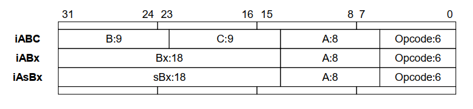

A No-Frills Introduction to Lua 5.1 VM Instructions
1 | by Kein-Hong Man, esq. <khman AT users.sf.net> |
Version 0.1, 20060313
为了检索指令描述，本人额外做了添加特定的前缀OP_处理，eg: MOVE—->OP_MOVE，以便在阅读lvm.c中的源码时能快速在本文档中找到相关注解。
“A No-Frills Introduction to Lua 5.1 VM Instructions” is licensed under the Creative
Commons Attribution-NonCommercial-ShareAlike License 2.0. You are free to copy,
distribute and display the work, and make derivative works as long as you give the original
author credit, you do not use this work for commercial purposes, and if you alter, transform,
or build upon this work, you distribute the resulting work only under a license identical to this
one. See the following URLs for more information:
http://creativecommons.org/licenses/by-nc-sa/2.0/
http://creativecommons.org/licenses/by-nc-sa/2.0/legalcode
Introduction
This is a no-frills introduction to the instruction set of the Lua 5.1 virtual machine. Compared
to Perl or Python, the compactness of Lua makes it relatively easier for someone to peek
under the hood and understand its internals. I think that one cannot completely grok a
scripting language, or any complex system for that matter, without slitting the animal open
and examining the entrails, organs and other yucky stuff that isn’t normally seen. So this
document is supposed to help with the “peek under the hood” bit.
This introductory guide covers Lua 5.1 only. Please see the older document for the guide to
Lua 5.0.2 virtual machine instructions. This is intentional; the internals of Lua is not fixed or
standardized in any way, so users must not expect compatibility from one version of Lua to
another as far as internals are concerned.
Output from ChunkSpy (URL: http://luaforge.net/projects/chunkspy/ ), a Lua 5
binary chunk disassembler which I wrote while studying Lua internals, was used to generate
the examples shown in this document. The brief disassembly mode of ChunkSpy is very
similar to the output of the listing mode of luac , so you do not need to learn a new listing
syntax. ChunkSpy can be downloaded from LuaForge (URL: http://luaforge.net/ ); it
is licensed under the same type of MIT-style license as Lua 5 itself.
ChunkSpy has an interactive mode: you can enter a source chunk and get an immediate
disassembly. This allows you to use this document as a tutorial by entering the examples into
ChunkSpy and seeing the results yourself. The interactive mode is also very useful when you
are exploring the behaviour of the Lua code generator on many short code snippets.
This is a quick introduction, so it isn’t intended to be a comprehensive or expert treatment of
the Lua virtual machine (from this point on, “Lua” refers to “Lua 5” unless otherwise stated)
or its instructions. It is intended to be a simple, easy-to-digest beginner’s guide to the Lua
virtual machine instruction set – it won’t do cartwheels or blow smoke rings.
The objective of this introduction is to cover all the Lua virtual machine instructions and the
structure of Lua 5 binary chunks with a minimum of fuss. Then, if you want more detail, you
can use luac or ChunkSpy to study non-trivial chunks of code, or you can dive into the Lua
source code itself for the real thing.
This is currently a draft, and I am not a Lua internals expert. So feedback is welcome. If you
find any errors, or if you have anything to contribute please send me an e-mail (to khman AT
users.sf.net or mkh AT pl.jaring.my ) so that I can correct it. Thanks.
Lua Instruction Basics
The Lua virtual machine instruction set we will look at is a particular implementation of the
Lua language. It is by no means the only way to skin the chicken. The instruction set just
happens to be the way the authors of Lua chose to implement version 5 of Lua. The following
sections are based on the instruction set used in Lua 5.1. The instruction set might change in
the future – do not expect it to be set in stone. This is because the implementation details of
virtual machines are not a concern to most users of scripting languages. For most
applications, there is no need to specify how bytecode is generated or how the virtual machine
runs, as long as the language works as advertised. So remember that there is no official
specification of the Lua virtual machine instruction set, there is no need for one; the only
official specification is of the Lua language.
In the course of studying disassemblies of Lua binary chunks, you will notice that many
generated instruction sequences aren’t as perfect as you would like them to be. This is
perfectly normal from an engineering standpoint. The canonical Lua implementation is not
meant to be an optimizing bytecode compiler or a JIT compiler. Instead it is supposed to load,
parse and run Lua source code efficiently. It is the totality of the implementation that counts.
If you really need the performance, you are supposed to drop down into native C functions
anyway.
Lua instructions have a fixed size, using a 32 bit unsigned integer data type by default. In
binary chunks, endianness is significant, but while in memory, an instruction can be portably
decoded or encoded in C using the usual integer shift and mask operations. The details can be
found in lopcodes.h , while the Instruction type definition is defined in llimits.h.
There are three instruction types and 38 opcodes (numbered 0 through 37) are currently in use
as of Lua 5.1. The instruction types are enumerated as iABC, iABx, iAsBx, and may be
visually represented as follows:

Instruction fields are encoded as simple unsigned integer values, except for sBx. Field sBx
can represent negative numbers, but it doesn’t use 2s complement. Instead, it has a bias equal
to half the maximum integer that can be represented by its unsigned counterpart, Bx. For a
field size of 18 bits, Bx can hold a maximum unsigned integer value of 262143, and so the
bias is 131071 (calculated as 262143 >> 1 ). A value of -1 will be encoded as (-1 + 131071)
or 131070 or 1FFFE in hexadecimal.
Fields A, B and C usually refers to register numbers (I’ll use the term “register” because of its
similarity to processor registers). Although field A is the target operand in arithmetic
operations, this rule isn’t always true for other instructions. A register is really an index into
the current stack frame, register 0 being the bottom-of-stack position.
1 | 31 24 23 16 15 8 7 0 |
Unlike the Lua C API, negative indices (counting from the top of stack) are not supported.
For some instructions, where the top of stack may be required, it is encoded as a special
operand value, usually 0. Local variables are equivalent to certain registers in the current
stack frame, while dedicated opcodes allow read/write of globals and upvalues. For some
instructions, a value in fields B or C may be a register or an encoding of the number of a
constant in the constant pool. This will be described further in the section on instruction
notation.
By default, Lua has a maximum stack frame size of 250. This is encoded as MAXSTACK in
llimits.h. The maximum stack frame size in turn limits the maximum number of locals
per function, which is set at 200, encoded as LUAI_MAXVARS in luaconf.h. Other limits
found in the same file include the maximum number of upvalues per function (60), encoded
as LUAI_MAXUPVALUES , call depths, the minimum C stack size, etc. Also, with an sBx field
of 18 bits, jumps and control structures cannot exceed a jump distance of about 131071.
A summary of the Lua 5.1 virtual machine instruction set is as follows:
1 | Opcode Name Description |
Really Simple Chunks
Before heading into binary chunk and virtual machine instruction details, this section will
demonstrate briefly how ChunkSpy can be used to explore Lua 5 code generation. All the
examples in this document were produced using the Lua 5.1 version of ChunkSpy found in
the ChunkSpy 0.9.8 distribution.
First, start ChunkSpy in interactive mode (user input is set in bold):
1 | $ lua ChunkSpy.lua --interact |
We’ll start with the shortest possible binary chunk that can be generated:
1 | >do end |
ChunkSpy will treat your keyboard input as a small chunk of Lua source code. The library
function string.dump() is first used to generate a binary chunk string, then ChunkSpy will
disassemble that string and give you a brief assembly language-style output listing.
Some features of the listing: Comment lines are prefixed by a semicolon. The header portion
of the binary chunk is not displayed with the brief style. Data or header information that isn’t
an instruction is shown as an assembler directive with a dot prefix. luac -style comments are
generated for some instructions, and the instruction location is in square brackets.
A “ do end ” generates a single RETURN instruction and does nothing else. There are no
parameters, locals, upvalues or globals. For the rest of the disassembly listings shown in this
document, we will omit some common header comments and show only the function
disassembly part. Instructions will be referenced by its marked position, e.g. line [1]. Here is
another very short chunk:
1 | >return |
A RETURN instruction is generated for every return in the source. The first RETURN (line
[1]) is generated by the return keyword, while the second RETURN (line [2]) is always
added by the code generator. This isn’t a problem, because the second RETURN never gets
executed anyway, and only 4 bytes is wasted. Perfect generation of RETURN instructions
requires basic block analysis, and it is not done because there is no performance penalty for
an extra RETURN during execution, only a negligible memory penalty.
Notice in these examples, the minimum stack size is 2, even when the stack isn’t used. The
next snippet assigns a constant value of 6 to the global variable a:
1 | >a= |
All string and number constants are pooled on a per-function basis, and instructions refer to
them using an index value which starts from 0. Global variable names need a constant string
as well, because globals are maintained as a table. Line [1] loads the value 6 (with an index to
the constant pool of 1) into register 0, then line [2] sets the global table with the constant “a”
(constant index 0) as the key and register 0 (holding the number 6) as the value.
If we write the variable as a local, we get:
1 | >local a="hello" |
Local variables reside in the stack, and they occupy a stack (or register) location for the
duration of their existence. The scope of a local variable is specified by a starting program
counter location and an ending program counter location; this is not shown in a brief
disassembly listing.
The local table in the function tells the user that register 0 is variable a. This information
doesn’t matter to the VM, because it needs to know register numbers only – register
allocation was supposed to have been properly done by the code generator. So LOADK in
line [1] loads constant 0 (the string “hello”) into register 0, which is the local variable a. A
stripped binary chunk will not have local variable names for debugging.
Some examples in the following sections have been further annotated with additional
comments in parentheses. Please note that ChunkSpy will not generate such comments, nor
will it indent functions that are at different nesting levels. Next we will take a look at the
structure of Lua 5.1 binary chunks.
Lua Binary Chunks
Lua can dump functions as binary chunks, which can then be written to a file, loaded and run.
Binary chunks behave exactly like the source code from which they were compiled.
A binary chunk consist of two parts: a header block and a top-level function. The header
portion contains 12 elements:
1 | Header block of a Lua 5 binary chunk |
- Binary chunk is recognized by checking for this signature
1 byte Version number, 0x51 (81 decimal) for Lua 5. - High hex digit is major version number
- Low hex digit is minor version number
1 byte Format version, 0=official version
1 byte Endianness flag (default 1) - 0=big endian, 1=little endian
1 byte Size of int (in bytes) (default 4)
1 byte Size of size_t (in bytes) (default 4)
1 byte Size of Instruction (in bytes) (default 4)
1 byte Size of lua_Number (in bytes) (default 8)
1 byte Integral flag (default 0) - 0=floating-point, 1=integral number type
On an x86 platform, the default header bytes will be (in hex):
1B4C7561 51000104 04040800
A Lua 5.1 binary chunk header is always 12 bytes in size. Since the characteristics of a Lua
virtual machine is hard-coded, the Lua undump code checks all 12 of the header bytes to
determine whether the binary chunk is fit for consumption or not. All 12 header bytes of the
binary chunk must exactly match the header bytes of the platform, otherwise Lua 5.1 will
refuse to load the chunk. The header is also not affected by endianness; the same code can be
used to load the main header of little-endian or big-endian binary chunks. The data type of
lua_Number is determined by the size of lua_Number byte and the integral flag together.
In theory, a Lua binary chunk is portable; in real life, there is no need for the undump code to
support such a feature. If you need undump to load all kinds of binary chunks, you are
probably doing something wrong. If however you somehow need this feature, you can try
ChunkSpy’s rewrite option, which allows you to convert a binary chunk from one profile to
another.
Anyway, most of the time there is little need to seriously scrutinize the header, because since
Lua source code is usually available, a chunk can be readily compiled into the native binary
chunk format.
The header block is followed immediately by the top-level function or chunk:
1 | Function block of a Lua 5 binary chunk |
- 1=VARARG_HASARG
- 2=VARARG_ISVARARG
- 4=VARARG_NEEDSARG
1 byte maximum stack size (number of registers used)
List list of instructions (code)
List list of constants
List list of function prototypes
List source line positions (optional debug data)
List list of locals (optional debug data)
List list of upvalues (optional debug data)
A function block in a binary chunk defines the prototype of a function. To actually execute
the function, Lua creates an instance (or closure ) of the function first. A function in a binary
chunk consist of a few header elements and a bunch of lists. Debug data can be stripped.
A String is defined in this way:
1 | All strings are defined in the following format: |
The source name is usually the name of the source file from which the binary chunk is
compiled. It may also refer to a string. This source name is specified only in the top-level
function; in other functions, this field consists only of a Size_t with the value 0.
The line defined and last line defined are the line numbers where the function prototype
starts and ends in the source file. For the main chunk, the values of both fields are 0. The next
two fields, the number of upvalues and the number of parameters, are self-explanatory, as
is the maximum stack size field. The is_vararg field is a bit more complicated, though.
These are all byte-sized fields.
The is_vararg flag comprise 3 bitfields. By default, Lua 5.1 defines the constant
LUA_COMPAT_VARARG, allowing the table arg to be used in functions that are defined
with a variable number of parameters (vararg functions.) The table arg itself is not counted in
the number of parameters. For old style code that uses arg , is_vararg is 7. If the code within
the vararg function uses … instead of arg , then is_vararg is 3 (the VARARG_NEEDSARG
field is 0.) If 5.0.2 compatibility is compiled out, then is_vararg is 2.
To summarize, the flag VARARG_ISVARARG (2) is always set for vararg functions. If
LUA_COMPAT_VARARG is defined, VARARG_HASARG (1) is also set. If … is not used
within the function, then VARARG_NEEDSARG (4) is set. A normal function always has an
is_vararg flag value of 0, while the main chunk always has an is_vararg flag value of 2.
After the function header elements comes a number of lists that store the information that
makes up the body of the function. Each list starts with an Integer as a list size count,
followed by a number of list elements. Each list has its own element format. A list size of 0
has no list elements at all.
In the following boxes, a data type in square brackets, e.g. [Integer] means that there are
multiple numbers of the element, in this case an integer. The count is given by the list size.
Names in parentheses are the ones given in the Lua sources; they are data structure fields.
The first list is the instruction list, or the actual code to the function. This is the list of
instructions that will actually be executed:
1 | Instruction list |
The format of the virtual machine instructions was given in the last chapter. A RETURN
instruction is always generated by the code generator, so the size of the instruction list should
be at least 1. Next is the list of constants:
1 | Constant list |
- 0=LUA_TNIL, 1=LUA_TBOOLEAN,
- 3=LUA_TNUMBER, 4=LUA_TSTRING
Const the constant itself: this field does not exist if the constant
type is 0; it is 0 or 1 for type 1; it is a Number for type 3,
or a String for type 4.
]
Number is the Lua number data type, normally an IEEE 754 64-bit double. Integer, Size_t
and Number are all endian-sensitive; Lua 5.1 will not load a chunk whose endianness is
different from that of the platform. Their sizes and formats are of course specified in the
binary chunk header. The data type of Number is determined by its size byte and the integral
flag. Boolean values are encoded as either 0 or 1.
The function prototype list comes after the constant list:
1 | Function prototype list |
Function prototypes or function blocks have the exact same format as the top-level function
or chunk. However, function prototypes that isn’t the top-level function do not have the
source name field defined. In this way, function prototypes at different lexical scoping levels
are defined and nested. In a complex binary chunk, the nesting may be several levels deep. A
closure will refer to a function by its number in the list.
The lists following the list of prototypes are optional. They contain debug information and
can be stripped to save space. First comes the source line position list:
1 | Source line position list |
Next up is the local list. Each local variable entry has 3 fields, a string and two integers:
1 | Local list |
The final list is the upvalue list:
1 | Upvalue list |
All the lists are not shared or re-used: Locals, upvalues, constants and prototypes referenced
in the code must be specified in the respective lists in the same function. In addition, locals,
upvalues, constants and the function prototypes are indexed using numbers starting from 0. In
disassembly listings, both the source line position list and the instruction list are indexed
starting from 1. Note that the latter is by convention only; the indices does not matter to the
virtual machine itself, since all jump-related instructions use only signed displacements.
However, for debug information, the scope of local variables is encoded using absolute
program counter positions, and these positions are based on a starting index of 1. This is also
consistent with the output listing from luac.
How does it all fit in? You can easily generate a detailed binary chunk disassembly using
ChunkSpy. Enter the following short bit of code and name the file simple.lua :
1 | local a = 8 |
Next, run ChunkSpy from the command line to generate the listing:
1 | $ lua ChunkSpy.lua --source simple.lua > simple.lst |
The following is a description of the generated listing (simple.lst ), split into segments.
1 | Pos Hex Data Description or Code |
This is an example of a binary chunk header. ChunkSpy calls this the global header to
differentiate it from a function header. For binary chunks specific to a certain platform, it is
easy to match the entire header at one go instead of testing each field. As described
previously, the header is 12 bytes in size, and needs to be exactly compatible with the
platform or else Lua 5.1 won’t load the binary chunk.
The global header is followed by the function header of the top-level function:
1 | 000C ** function [0] definition (level 1) |
A function’s header is always variable in size, due to the source name string. The source
name is only present in the top-level function. A top-level chunk does not have a line number
on which it is defined, so both the line defined fields are 0. There are no upvalues or
parameters. A top-level chunk can always take a variable number of parameters; is_vararg is
always 2 for the top-level chunk. The stack size is set at the minimum of 2 for this very
simple chunk.
Next we come to the various lists, starting with the code listing of the main chunk:
1 | * code: |
The first line of the source code compiles to a single instruction, line [1]. Local a is register 0
and the number 8 is constant 0. In line [2], an instance of function prototype 0 is created, and
the closure is temporarily placed in register 1. The MOVE instruction in line [3] is actually
used by the CLOSURE instruction to manage the upvalue a; it is not really executed. This
will be explained in detail in Chapter 14. The closure is then placed into the global b in line
[4]; “b” is constant 1 while the closure is in register 1. Line [5] returns control to the calling
function. In this case, it exits the chunk.
The list of constants follow the instructions:
1 | * constants: |
The top-level function requires two constants, the number 8 (which is used in the assignment
on line 1) and the string “b” (which is used to refer to the global variable b on line 2.)
This is followed by the function prototype list of the main chunk. On line 2 of the source, a
function prototype was declared within the main chunk. This function is instantiated and the
closure is assigned to global b.
The function prototype list holds all the relevant information, a function block within a
function block. ChunkSpy reports it as function prototype number 0, at level 2. Level 1 is the
top-level function; there is only one level 1 function, but there may be more than one function
prototype at other levels.
1 | * functions: |
Above is the first section of function b’s prototype. It has no name string; it is defined on line
2 (both values point to line 2); there is one upvalue; there is one parameter, c; it is not a
vararg function; and its maximum stack size is 2. Parameters are located from the bottom of
the stack, so the single parameter c of the function is at register 0.
The prototype has 4 instructions. Most Lua virtual machine instructions are easy to decipher,
but some of them have details that are not immediately evident. This example however
should be quite easy to understand. In line [1], 0 is the upvalue a and 1 is the target register,
which is a temporary register. Line [2] is the addition operation, with register 1 holding the
temporary result while register 0 is the function parameter c. In line [3], the global d (so
named by constant 0) is set, and in the next line, control is returned to the caller.
1 | * constants: |
The constant list for the function has one entry, the string “d” is used to look up the global
variable of that name. This is followed by the source line position list:
1 | * lines: |
All four instructions that were generated came from line 2 of the source code.
The last two lists of the function prototype are the local list and the upvalue list:
1 | * locals: |
There is one local variable, which is parameter c. For parameters, the startpc value is 0.
Normal locals that are defined within a function have a startpc value of 1. There is also an
upvalue, a, which refers to the local a in the parent (top) function.
After the end of the function prototype data for function b, the chunk resumes with the debug
information for the top-level chunk:
1 | * lines: |
From the source line list, we can see that there are 5 instructions in the top-level function. The
first instruction came from line 1 of the source, while the other 4 instructions came from line
2 of the source.
The top-level function has one local variable, named “a”, active from program counter
location 1 to location 4, and it refers to register 0. There are no upvalues, so the size of that
table is 0. The binary chunk ends after the debug information of the main chunk is listed.
Now that we’ve seen a binary chunk in detail, we will proceed to look at each Lua 5.1 virtual
machine instruction.
Instruction Notation
Before looking at some Lua virtual machine instructions, here is a little something about the
notation used for describing instructions. Instruction descriptions are given as comments in
the Lua source file lopcodes.h. The instruction descriptions are reproduced in the
following chapters, with additional explanatory notes. Here are some basic symbols:
1 | R(A) Register A (specified in instruction field A) |
The notation used to describe instructions is a little like pseudo-C. The operators used in the
notation are largely C operators, while conditional statements use C-style evaluation.
Booleans are evaluated C-style. Thus, the notation is a loose translation of the actual C code
that implements an instruction.
The operation of some instructions cannot be clearly described by one or two lines of
notation. Hence, this guide will supplement symbolic notation with detailed descriptions of
the operation of each instruction. Having described an instruction, examples will be given to
show the instruction working in a short snippet of Lua code. Using ChunkSpy’s interactive
mode, you can try out the examples yourself and get instant feedback in the form of
disassembled code. If you want a disassembled listing plus the byte values of data and
instructions, you can use ChunkSpy to generate a normal, verbose, disassembly listing.
The program counter of the virtual machine (PC) always points to the next instruction. This
behaviour is standard for most microprocessors. The rule is that once an instruction is read in
to be executed, the program counter is immediately updated. So, to skip a single instruction
following the current instruction, add 1 (the displacement) to the PC. A displacement of -
will theoretically cause a JMP instruction to jump back onto itself, causing an infinite loop.
Luckily, the code generator is not supposed to be able to make up stuff like that.
As previously explained, registers and local variables are roughly equivalent. Temporary
results are always held in registers. Instruction fields B and C can point to a constant instead
of a register for some instructions, this is when the field value has its MSB (most significant
bit) set. For example, a field B value of 256 will point to the constant at index 0, if the field is
9 bits wide. For most instructions, field A is the target register. Disassembly listings preserve
the A, B, C operand field order for consistency.
Loading Constants
Loads and moves are the starting point of pretty much all processor or virtual machine
instruction sets, so we’ll start with primitive loads and moves:
1 | OP_MOVE A B R(A) := R(B) |
The most straightforward use of MOVE is for assigning a local to another local:
1 | >local a,b = 10; b = a |
Line [3] assigns (copies) the value in local a (register 0) to local b (register 1).
You won’t see MOVE instructions used in arithmetic expressions because they are not
needed by arithmetic operators. All arithmetic operators are in 2- or 3-operand style: the
entire local stack frame is already visible to operands R(A), R(B) and R(C) so there is no need
for any extra MOVE instructions.
Other places where you will see MOVE are:
- When moving parameters into place for a function call.
- When moving values into place for certain instructions where stack order is important, e.g.
GETTABLE, SETTABLE and CONCAT. - When copying return values into locals after a function call.
- After CLOSURE instructions (discussed in Chapter 14.)
There are 3 fundamental instructions for loading constants into local variables. Other
instructions, for reading and writing globals, upvalues and tables are discussed in the
following chapters. The first constant loading instruction is LOADNIL:
1 | OP_LOADNIL A B R(A) := ... := R(B) := nil |
LOADNIL uses the operands A and B to mean a range of register locations. The example for
MOVE in the last page shows LOADNIL used to set a single register to nil.
1 | >local a,b,c,d,e = nil,nil,0 |
Line [2] nils locals d and e. A LOADNIL instruction is not needed for locals a and b because
the instruction has been optimized away. Local c is explicitly initialized with the value 0. The
LOADNIL for locals a and b can be optimized away as the Lua virtual machine always sets
all locals to nil prior to executing a function. The optimization rule is a simple one: If no
other instructions have been generated, then a LOADNIL as the first instruction can be
optimized away.
In the example, although the LOADNIL on line [2] is redundant, it is still generated as there
is already an instruction that is not LOADNIL on line [1]. Ideally, one should put all locals
that are initialized to nil at the top of the function, before anything else. In the above case, we
can rearrange the locals to take advantage of the optimization rule:
1 | >local a,b,d,e local c= |
Now, we save one LOADNIL instruction. In other parts of a function, an explicit assignment
of nil to a local variable will of course require a LOADNIL instruction.
1 | OP_LOADK A Bx R(A) := Kst(Bx) |
LOADK loads a constant from the constant list into a register or local. Constants are indexed
starting from 0. Some instructions, such as arithmetic instructions, can use the constant list
without needing a LOADK. Constants are pooled in the list, duplicates are eliminated. The
list can hold nils, booleans, numbers or strings.
1 | >local a,b,c,d = 3,"foo",3,"foo" |
The constant 3 and the constant “foo” are both written twice in the source snippet, but in the
constant list, each constant has a single location. The constant list contains the names of
global variables as well, since GETGLOBAL and SETGLOBAL makes an implied LOADK
operation in order to get the name string of a global variable first before looking it up in the
global table.
The final constant-loading instruction is LOADBOOL, for setting a boolean value, and it has
some additional functionality.
1 | OP_LOADBOOL A B C R(A) := (Bool)B; if (C) PC++ |
LOADBOOL is used for loading a boolean value into a register. It’s also used where a
boolean result is supposed to be generated, because relational test instructions, for example,
do not generate boolean results – they perform conditional jumps instead. The operand C is
used to optionally skip the next instruction (by incrementing PC by 1) in order to support such
code. For simple assignments of boolean values, C is always 0.
1 | >local a,b = true,false |
This example is straightforward: Line [1] assigns true to local a (register 0) while line [2]
assigns false to local b (register 1). In both cases, field C is 0, so PC is not incremented and
the next instruction is not skipped.
1 | >local a = 5 > 2 |
This is an example of an expression that gives a boolean result and is assigned to a variable.
Notice that Lua does not optimize the expression into a true value; Lua 5.1 does not perform
compile-time constant evaluation for relational operations, but it can perform simple constant
evaluation for arithmetic operations.
Since the relational operator LT (which will be covered in greater detail later) does not give a
boolean result but performs a conditional jump, LOADBOOL uses its C operand to perform
an unconditional jump in line [3] – this saves one instruction and makes things a little tidier.
The reason for all this is that the instruction set is simply optimized for if…then blocks.
Essentially, local a = 5 > 2 is executed in the following way:
1 | local a |
In the disassembly listing, when LT tests 2 < 5, it evaluates to true and doesn’t perform a
conditional jump. Line [2] jumps over the false result path, and in line [4], the local a
(register 0) is assigned the boolean true by the instruction LOADBOOL. If 2 and 5 were
reversed, line [3] will be followed instead, setting a false, and then the true result path (line
[4]) will be skipped, since LOADBOOL has its field C set to non-zero.
So the true result path goes like this (additional comments in parentheses):
1 | [1] lt 1 257 256 ; 2 5, to [3] if false (if 2 < 5) |
and the false result path (which never executes in this example) goes like this:
1 | [1] lt 1 257 256 ; 2 5, to [3] if false (if 2 < 5) |
The true result path looks longer, but it isn’t, due to the way the virtual machine is
implemented. This will be discussed further in the section on relational and logic instructions.
Upvalues and Globals
When the Lua virtual machine needs an upvalue or a global, there are dedicated instructions
to load the value into a register. Similarly, when an upvalue or a global needs to be written to,
dedicated instructions are used.
1 | OP_GETGLOBAL A Bx R(A) := Gbl[Kst(Bx)] |
The GETGLOBAL and SETGLOBAL instructions are very straightforward and easy to use.
The instructions require that the global variable name be a constant, indexed by instruction
field Bx. R(A) is either the source or target register. The names of the global variables used
by a function will be part of the constant list of the function.
1 | >a = 40; local b = a |
From the example, you can see that “b” is the name of the local variable while “a” is the name
of the global variable. Line [1] loads the number 40 into register 0 (functioning as a
temporary register, since local b hasn’t been defined.) Line [2] assigns the value in register 0
to the global variable with name “a” (constant 0). By line [3], local b is defined and is
assigned the value of global a.
1 | OP_GETUPVAL A B R(A) := UpValue[B] |
GETUPVAL and SETUPVAL uses internally-managed upvalue lists. The list of upvalue
name strings that are found in a function prototype is for debugging purposes; it is not used by
the Lua virtual machine and can be stripped by luac.
During execution, upvalues are set up by a CLOSURE, and maintained by the Lua virtual
machine. In the following example, function b is declared inside the main chunk, and is
shown in the disassembly as a function prototype within a function prototype. The
indentation, which is not in the original output, helps to visually separate the two functions.
1 | >local a; function b() a = 1 return a end |
In the main chunk (function 0, level 1), local a starts as a nil. The CLOSURE in line [1] then
instantiates function prototype 0 (function 0, level 2) with a single upvalue, a. Line [2] is part
of the closure, it links local a in the current scope to upvalue a in the closure. Finally the
closure is assigned to global b.
In function b, there is a single upvalue, a. In Pascal, a variable in an outer scope is found by
traversing stack frames. However, instantiations of Lua functions are first-class values, and
they may be assigned to a variable and referenced elsewhere. Moreover, a single prototype
may have multiple instantiations. Managing upvalues thus becomes a little more tricky than
traversing stack frames in Pascal. The Lua virtual machine solution is to provide a clean
interface to access upvalues via GETUPVAL and SETUPVAL, while the management of
upvalues is handled by the virtual machine itself.
Line [2] in function b sets upvalue a (upvalue number 0 in the upvalue table) to a number
value of 1 (held in temporary register 0.) In line [3], the value in upvalue a is retrieved and
placed into register 0, where the following RETURN instruction will use it as a return value.
The RETURN in line [5] is unused.
Table Instructions
Accessing table elements is a little more complex than accessing upvalues and globals:
1 | OP_GETTABLE A B C R(A) := R(B)[RK(C)] |
All 3 operand fields are used, and some of the operands can be constants. A constant is
specified by setting the MSB of the operand to 1. If RK(C) need to refer to constant 1, the
encoded value will be (256 | 1) or 257, where 256 is the value of bit 8 of the operand.
Allowing constants to be used directly reduces considerably the need for temporary registers.
1 | >local p = {}; p[1] = "foo"; return p["bar"] |
In line [1], a new empty table is created and the reference placed in local p (register 0).
Creating and populating new tables is a little involved so it will only be discussed later.
Table index 1 is set to “foo” in line [2] by the SETTABLE instruction. Both the index and the
value for the table element are encoded constant numbers; 256 is constant 0 (the number 1)
while 257 is constant 1 (the string “foo”.) The R(A) value of 0 points to the new table that
was defined in line [1].
In line [3], the value of the table element indexed by the string “bar” is copied into temporary
register 1, which is then used by RETURN as a return value. 258 is constant 2 (the string
“bar”) while 0 in field B is the reference to the table.
RK(B) and RK(C) type operands are also used in virtual machine instructions that implement
binary arithmetic operators and relational operators.
Arithmetic and String Instructions
The Lua virtual machine’s set of arithmetic instructions looks like 3-operand arithmetic
instructions on an RISC processor. 3-operand instructions allow arithmetic expressions to be
translated into machine instructions pretty efficiently.
1 | OP_ADD A B C R(A) := RK(B) + RK(C) |
The source operands, RK(B) and RK(C), may be constants. If a constant is out of range of
field B or field C, then the constant will be loaded into a temporary register in advance.
1 | >local a,b = 2,4; a = a + 4 * b - a / 2 ^ b % 3 |
In the disassembly shown above, parts of the expression is shown as additional comments in
parentheses. Each arithmetic operator translates into a single instruction. This also means that
while the statement “ count = count + 1 ” is verbose, it translates into a single instruction
if count is a local. If count is a global, then two extra instructions are required to read and
write to the global (OP_GETGLOBAL and OP_SETGLOBAL), since arithmetic operations can only
be done on registers (locals) only.
As of Lua 5.1, the parser and code generator can perform limited constant expression folding
or evaluation. Constant folding only works for binary arithmetic operators and the unary
minus operator (UNM, which will be covered next.) There is no equivalent optimization for
relational, boolean or string operators.
The optimization rule is simple: If both terms of a subexpression are numbers, the
subexpression will be evaluated at compile time. However, there are exceptions. One, the
code generator will not attempt to divide a number by 0 for DIV and MOD, and two, if the
result is evaluated as a NaN (Not a Number) then the optimization will not be performed.
Also, constant folding is not done if one term is in the form of a string that need to be
coerced. In addition, expression terms are not rearranged, so not all optimization
opportunities can be recognized by the code generator. This is intentional; the Lua code
generator is not meant to perform heavy duty optimizations, as Lua is a lightweight language.
Here are a few examples to illustrate how it works (additional comments in parentheses):
1 | >local a = 4 + 7 + b; a = b + 4 * 7; a = b + 4 + 7 |
For the first assignment statement, 4+7 is evaluated, thus 11 is added to b in line [2]. Next, in
line [3] and [4], b and 28 are added together and assigned to a because multiplication has a
higher precedence and 4*7 is evaluated first. Finally, on lines [5] to [7], there are two addition
operations. Since addition is left-associative, code is generated for b+4 first, and only after
that, 7 is added. So in the third example, Lua performs no optimization. This can be fixed
using parentheses to explicitly change the precedence of a subexpression:
1 | >local a = b + (4 + 7) |
Now, the 4+7 subexpression can be evaluated at compile time. If the statement is written as:
1 | local a = 7 + (4 + 7) |
the code generator will generate a single LOADK instruction; Lua first evaluates 4+7 , then 7
is added, giving a total of 18. The arithmetic expression is completely evaluated in this case,
thus no arithmetic instructions are generated.
In order to make full use of constant folding in Lua 5.1, the user just need to remember the
usual order of evaluation of an expression’s elements and apply parentheses where necessary.
The following are two expressions which will not be evaluated at compile time:
1 | >local a = 1 / 0; local b = 1 + "1" |
The first is due to a divide-by-0, while the second is due to a string constant that needs to be
coerced into a number. In both cases, constant folding is not performed, so the arithmetic
instructions needed to perform the operations at run time are generated instead.
Next are instructions for performing unary minus and logical NOT:
1 | OP_UNM A B R(A) := -R(B) |
Here is an example of both unary operations:
1 | >local p,q = 10,false; q,p = -p,not q |
Both UNM and NOT do not accept a constant as a source operand, making the LOADK on
line [1] and the LOADBOOL on line [2] necessary. When an unary minus is applied to a
constant number, the unary minus is optimized away. Similarly, when a not is applied to true
or false , the logical operation is optimized away.
In addition to this, constant folding is performed for unary minus, if the term is a number. So,
the expression in the following is completely evaluated at compile time:
1 | >local a = - (7 / 4) |
Constant folding is performed on 7/4 first. Then, since the unary minus operator is applied to
the constant 1.75, constant folding can be performed again, and the code generated becomes a
simple LOADK (on line [1].)
1 | OP_LEN A B R(A) := length of R(B) |
This instruction is new in Lua 5.1, implementing the # operator. If # operates on a constant,
then the constant is loaded in advance using LOADK. The LEN instruction is currently not
optimized away using compile time evaluation, even if it is operating on a constant string or
table.
1 | >local a,b; a = #b; a= #"foo" |
In the above example, LEN operates on local b in line [1], leaving the result in local a. Since
LEN cannot operate directly on constants, line [2] first loads the constant “foo” into a
temporary local, and only then LEN is executed.
1 | OP_CONCAT A B C R(A) := R(B).. ... ..R(C) |
Like LOADNIL, CONCAT accepts a range of registers. Doing more than one string
concatenation at a time is faster and more efficient than doing them separately.
1 | >local x,y = "foo","bar"; return x..y..x..y |
In this example, strings are moved into place first (lines [3] to [6]) in the concatenation order
before a single CONCAT instruction is executed in line [7]. The result is left in temporary
local 2, which is then used as a return value by the RETURN instruction on line [8].
1 | >local a = "foo".."bar".."baz" |
In the second example, three strings are concatenated together. Note that there is no string
constant folding. Lines [1] through [3] loads the three constants in the correct order for
concatenation; the CONCAT on line [4] performs the concatenation itself and assigns the
result to local a.
Jumps and Calls
Lua does not have any unconditional jump feature in the language itself, but in the virtual
machine, the unconditional jump is used in control structures and logical expressions.
1 | OP_JMP sBx PC += sBx |
For example, since a relational test instruction makes conditional jumps rather than generate a
boolean result, a JMP is used in the code sequence for loading either a true or a false :
1 | >local m, n; return m >= n |
Line[1] performs the relational test. In line [2], the JMP skips over the false path (line [3]) to
the true path (line [4]). The result is placed into temporary local 2, and returned to the caller
by RETURN in line [5]. More examples where JMP is used will be covered in later chapters.
Next we will look at the CALL instruction, for calling instantiated functions:
OP_CALL A B C R(A), … ,R(A+C-2) := R(A)(R(A+1), … ,R(A+B-1))
1 | Performs a function call, with register R(A) holding the reference to the |
Generally speaking, for fields B and C, a zero means that multiple results or parameters (up to
the top of stack) are expected. If the number of results or parameters are fixed, then the actual
number is one less than the encoded field value. Here is the simplest possible call:
1 | >z() |
In line [2], the call has zero parameters (field B is 1), zero results are retained (field C is 1),
while register 0 temporarily holds the reference to the function object from global z. Next we
see a function call with multiple parameters or arguments:
1 | >z(1,2,3) |
Lines [1] to [4] loads the function reference and the arguments in order, then line [5] makes
the call with an operand B value of 4, which means there are 3 parameters. Since the call
statement is not assigned to anything, no return results need to be retained, hence field C is 1.
Here is an example that uses multiple parameters and multiple return values:
1 | >local p,q,r,s = z(y()) |
First, the function references are retrieved (lines [1] and [2]), then function y is called first
(temporary register 1). The CALL has a field C of 0, meaning multiple return values are
accepted. These return values become the parameters to function z, and so in line [4], field B
of the CALL instruction is 0, signifying multiple parameters. After the call to function z, 4
results are retained, so field C in line [4] is 5. Finally, here is an example with calls to
standard library functions:
1 | >print(string.char(64)) |
When a function call is the last parameter to another function call, the former can pass
multiple return values, while the latter can accept multiple parameters.
Complementing CALL is RETURN:
1 | OP_RETURN A B return R(A), ... ,R(A+B-2) |
Like CALL, a field B value of 0 signifies multiple return values (up to top of stack.)
1 | >local e,f,g; return f,g |
In line [3], 2 return values are specified (field B value of 3.) The return values are placed in
consecutive registers starting from register 3 by the MOVEs on line [1] and [2]. The
RETURN in line [4] is redundant; it is always generated by the Lua code generator.
1 | OP_TAILCALL A B C return R(A)(R(A+1), ... ,R(A+B-1)) |
A TAILCALL is used only for one specific return style, described above. Multiple return
results are always produced by a tail call. Here is an example:
1 | >return x("foo", "bar") |
Arguments for a tail call are handled in exactly the same way as arguments for a normal call,
so in line [3], the tail call has a field B value of 3, signifying 2 parameters. Field C is 0, for
multiple returns; this due to the constant LUA_MULTRET in lua.h. In practice, field C is
not used by the virtual machine (except as an assert) since the syntax guarantees multiple
return results.
Line [5] is a RETURN instruction specifying multiple return results. This is required when
the function called by TAILCALL is a C function. In the case of a C function, execution
continues to line [5] upon return, thus the RETURN is necessary. Line [6] is redundant. When
Lua functions are tailcalled, the virtual machine does not return to line [5] at all.
The other instructions covered in this section are SELF and VARARG. Both instructions are
covered here because they are closely tied to function calls. We will start with VARARG:
1 | OP_VARARG A B R(A), R(A+1), ..., R(A+B-1) = vararg |
The use of VARARG will become clear with the help of a few examples:
1 | >local a,b,c = ... |
Note that the main or top-level chunk is a vararg function, as the is_vararg flag is set (the
third number of the .function directive) in the example above. In this example, the left hand
side of the assignment statement needs three values (or objects.) So in line [1], the operand B
of the VARARG instruction is (3+1), or 4. VARARG will copy three values into a, b and c.
If there are less than three values available, nils will be used to fill up the empty places.
1 | >local a = function(...) local a,b,c = ... end |
Here is an alternate version where a function is instantiated and assigned to local a. The old-
style arg is retained for compatibility purposes, but is unused in the above example.
1 | >local a; a(...) |
When a function is called with ‘…’ as the argument, the function will accept a variable
number of parameters or arguments. On line [2], a VARARG with a B field of 0 is used. The
VARARG will copy all the parameters passed on to the main chunk to register 2 onwards, so
that the CALL in the next line can utilize them as parameters of function a. The function call
is set to accept a multiple number of parameters and returns zero results.
1 | >local a = {...} |
Above are two other cases where VARARG needs to copy all passed parameters over to a set
of registers in order for the next operation to proceed. Both the above forms of table creation
and return accepts a variable number of values or objects.
1 | OP_SELF A B C R(A+1) := R(B); R(A) := R(B)[RK(C)] |
Finally, we have an instruction, SELF, which is used for object-oriented programming. A
SELF instruction saves an extra instruction and speeds up the calling of methods in object-
oriented programming. It is only generated for method calls that use the colon syntax. In the
following example:
1 | >foo:bar("baz") |
The method call is equivalent to: foo.bar(foo, “baz”) , except that the global foo is only
looked up once. This is significant if metamethods have been set. The SELF in line [2] is
equivalent to a GETTABLE lookup (the table is in register 0 and the index is constant 1) and
a MOVE (copying the table reference from register 0 to register 1.)
Without SELF, a GETTABLE will write its lookup result to register 0 (which the code
generator will normally do) and the table reference will be overwritten before a MOVE can be
done. Using SELF saves roughly one instruction and one temporary register slot.
After setting up the method call using SELF, the call is made with the usual CALL instruction
in line [4], with two parameters. The equivalent code for a method lookup is compiled in the
following manner:
1 | >foo.bar(foo, "baz") |
The alternative form of a method call is one instruction longer, and the user must take note of
any metamethods that may affect the call. The SELF in the previous example replaces the
GETTABLE on line [2] and the GETGLOBAL on line [3]. If foo is a local variable, then the
equivalent code is a GETTABLE and a MOVE.
Next we will look at more complicated instructions.
Relational and Logic Instructions
Relational and logic instructions are used in conjunction with other instructions to implement
control structures or expressions. Instead of generating boolean results, these instructions
conditionally perform a jump over the next instruction; the emphasis is on implementing
control blocks. Instructions are arranged so that there are two paths to follow based on the
relational test.
1 | OP_EQ A B C if ((RK(B) == RK(C)) ~= A) then PC++ |
By comparing the result of the relational operation with A, the sense of the comparison can be
reversed. Obviously the alternative is to reverse the paths taken by the instruction, but that
will probably complicate code generation some more. The conditional jump is performed if
the comparison result is not A, whereas execution continues normally if the comparison result
matches A. Due to the way code is generated and the way the virtual machine works, a JMP
instruction is always expected to follow an EQ, LT or LE. The following JMP is optimized by
executing it in conjunction with EQ, LT or LE.
1 | >local x,y; return x ~= y |
In the above example, the equality test is performed in line [2]. However, since the
comparison need to be returned as a result, LOADBOOL instructions are used to set a register
with the correct boolean value. This is the usual code pattern generated if the expression
requires a boolean value to be generated and stored in a register as an intermediate value or a
final result.
It is easier to visualize the disassembled code as:
1 | if x ~= y then |
The true result path (when the comparison result matches A) goes like this:
1 | [1] loadnil 0 1 |
while the false result path (when the comparison result does not match A) goes like this:
1 | [1] loadnil 0 1 |
ChunkSpy comments the EQ in line [2] by letting the user know when the conditional jump is
taken. The jump is taken when “the value in register 0 equals to the value in register 1” (the
comparison) is not false (the value of operand A). If the comparison is x == y , everything will
be the same except that the A operand in the EQ instruction will be 1, thus reversing the sense
of the comparison. Anyway, these are just the Lua code generator’s conventions; there are
other ways to code x ~= y in terms of Lua virtual machine instructions.
For conditional statements, there is no need to set boolean results. Lua is optimized for
coding the more common conditional statements rather than conditional expressions.
1 | >local x,y; if x ~= y then return "foo" else return "bar" end |
In the above conditional statement, the same inequality operator is used in the source, but the
sense of the EQ instruction in line [1] is now reversed. Since the EQ conditional jump can
only skip the next instruction, additional JMP instructions are needed to allow large blocks of
code to be placed in both true and false paths. In contrast, in the previous example, only a
single instruction is needed to set a boolean value. For if statements, the true block comes
first followed by the false block in code generated by the code generator. To reverse the
positions of the true and false paths, the value of operand A is changed.
The true path (when x ~= y is true) goes from [1] to [3]–[5] and on to [8]. Since there is a
RETURN in line [4], the JMP in line [5] and the RETURN in [8] are never executed at all;
they are redundant but does not adversely affect performance in any way. The false path is
from [1] to [2] to [6]–[8] onwards. So in a disassembly listing, you should see the true and
false code blocks in the same order as in the Lua source.
The following is another example, this time with an elseif:
1 | >if 8 > 9 then return 8 elseif 5 >= 4 then return 5 else return 9 end |
This example is a little more complex, but the blocks are structured in the same order as the
Lua source, so interpreting the disassembled code should not be too hard.
Next are the two instructions used for performing boolean tests and implementing Lua’s logic
operators:
1 | OP_TEST A C if not (R(A) <=> C) then PC++ |
TEST and TESTSET are used in conjunction with a following JMP instruction, while
TESTSET has an addditional conditional assignment. Like EQ, LT and LE, the following
JMP instruction is compulsory, as the virtual machine will execute the JMP together with
TEST or TESTSET. The two instructions are used to implement short-circuit LISP-style
logical operators that retains and propagates operand values instead of booleans. First, we’ll
look at how and and or behaves:
1 | >local a,b,c; c = a and b |
An and sequence exits on false operands (which can be false or nil) because any false
operands in a string of and operations will make the whole boolean expression false. If
operands evaluates to true, evaluation continues. When a string of and operations evaluates
to true, the result is the last operand value.
In line [1], the first operand (the local a) is set to local c when the test is false (with a field C
of 0), while the jump to [3] is made when the test is true, and then in line [3], the expression
result is set to the second operand (the local b). This is equivalent to:
1 | if a then |
The c = a portion is done by TESTSET itself, while MOVE performs c = b. Now, if the result
is already set with one of the possible values, a TEST instruction is used instead:
1 | >local a,b; a = a and b |
The TEST instruction does not perform an assignment operation, since a = a is redundant.
This makes TEST a little faster. This is equivalent to:
1 | if a then |
Next, we will look at the or operator:
1 | >local a,b,c; c = a or b |
An or sequence exits on true operands, because any operands evaluating to true in a string of
or operations will make the whole boolean expression true. If operands evaluates to false ,
evaluation continues. When a string of or operations evaluates to false, all operands must
have evaluated to false.
In line [1], the local a value is set to local c if it is true, while the jump is made if it is false
(the field C is 1). Thus in line [3], the local b value is the result of the expression if local a
evaluates to false. This is equivalent to:
1 | if a then |
Like the case of and , TEST is used when the result already has one of the possible values,
saving an assignment operation:
1 | >local a,b; a = a or b |
Short-circuit logical operators also means that the following Lua code does not require the use
of a boolean operation:
1 | >local a,b,c; if a > b and a > c then return a end |
With short-circuit evaluation, a > c is never executed if a > b is false, so the logic of the Lua
statement can be readily implemented using the normal conditional structure. If both a > b
and a > c are true, the path followed is [1] (the a > b test) to [3] (the a > c test) and finally to
[5], returning the value of a. A TEST instruction is not required. This is equivalent to:
1 | if a > b then |
For a single variable used in the expression part of a conditional statement, TEST is used to
boolean-test the variable:
1 | >if Done then return end |
In line [2], the TEST instruction jumps to the true block if the value in temporary register 0
(from the global Done) is true. The JMP at line [3] jumps over the true block, which is the
code inside the if block (line [4].)
If the test expression of a conditional statement consist of purely boolean operators, then a
number of TEST instructions will be used in the usual short-circuit evaluation style:
1 | >if Found and Match then return end |
In the last example, the true block of the conditional statement is executed only if both Found
and Match evaluates to true. The path is from [2] (test for Found ) to [4] to [5] (test for
Match ) to [7] (the true block, which is an explicit return statement.)
If the statement has an else section, then the JMP on line [6] will jump to the false block (the
else block) while an additional JMP will be added to the true block to jump over this new
block of code. If or is used instead of and , the appropriate C operand will be adjusted
accordingly.
Finally, here is how Lua’s ternary operator (:? in C) equivalent works:
1 | >local a,b,c; a = a and b or c |
The TEST in line [1] is for the and operator. First, local a is tested in line [1]. If it is false ,
then execution continues in [2], jumping to line [5]. Line [5] assigns local c to the end result
because since if a is false, then a and b is false , and false or c is c.
If local a is true in line [1], the TEST instruction makes a jump to line [3], where there is a
TESTSET, for the or operator. If b evaluates to true, then the end result is assigned the value
of b, because b or c is b if b is not false. If b is also false , the end result will be c.
For the instructions in line [1], [3] and [5], the target (in field A) is register 0, or the local a,
which is the location where the result of the boolean expression is assigned. The equivalent
Lua code is:
1 | if a then |
The two a = c assignments are actually the same piece of code, but are repeated here to avoid
using a goto and a label. Normally, if we assume b is not false and not nil, we end up with the
more recognizable form:
1 | if a then |
Loop Instructions
Lua has dedicated instructions to implement the two types of for loops, while the other two
types of loops uses traditional test-and-jump.
1 | OP_FORPREP A sBx R(A) -= R(A+2); PC += sBx |
Loop indices behave a little differently in Lua 5.1 compared to Lua 5.0.2. Consider the
following, where loop index i is used as an upvalue in the instantiation of 10 functions:
1 | local a = {} |
Lua 5.0.2 will print out 10, while Lua 5.1 will print out 5. In Lua 5.0.2, the scope of the loop
index encloses the for loop, resulting in the creation of a single upvalue. In Lua 5.1, the loop
index is truly local to the loop, resulting in the creation of 10 separate upvalues.
For the sake of efficiency, FORLOOP contains a lot of functionality, so when a loop iterates,
only one instruction, FORLOOP, is needed. Here is a simple example:
1 | >local a = 0; for i = 1,100,5 do a = a + i end |
In the above example, notice that the for loop causes three additional local pseudo-variables
(or internal variables) to be defined, apart from the external loop index, i. The three pseudo-
variables, named (for index), (for limit) and (for step) are required to completely specify the
state of the loop, and are not visible to Lua source code. They are arranged in consecutive
registers, with the external loop index given by R(A+3) or register 4 in the example.
The loop body is in line [6] while line [7] is the FORLOOP instruction that steps through the
loop state. The sBx field of FORLOOP is negative, as it always jumps back to the beginning
of the loop body.
Lines [2]–[4] initializes the three register locations where the loop state will be stored. If the
loop step is not specified in the Lua source, a constant 1 is added to the constant pool and a
LOADK instruction is used to initialize the pseudo-variable (for step) with the loop step.
FORPREP in lines [5] makes a negative loop step and jumps to line [7] for the initial test. In
the example, at line [5], the internal loop index (at register 1) will be (1-5) or -4. When the
virtual machine arrives at the FORLOOP in line [7] for the first time, one loop step is made
prior to the first test, so the initial value that is actually tested against the limit is (-4+5) or 1.
Since 1 < 100, an iteration will be performed. The external loop index i is then set to 1 and a
jump is made to line [6], thus starting the first iteration of the loop.
The loop at line [6]–[7] repeats until the internal loop index exceeds the loop limit of 100.
The conditional jump is not taken when that occurs and the loop ends. Beyond the scope of
the loop body, the loop state ((for index), (for limit), (for step) and i) is not valid. This is
determined by the parser and code generator. The range of PC values for which the loop state
variables are valid is located in the locals list. The brief assembly listings generated by
ChunkSpy that you are seeing does not give the startpc and endpc values contained in the
locals list. In theory, these rules can be broken if you write Lua assembly directly.
1 | >for i = 10,1,-1 do if i == 5 then break end end |
In the second loop example above, except for a negative loop step size, the structure of the
loop is identical. The body of the loop is from line [5] to line [8]. Since no additional stacks
or states are used, a break translates simply to a JMP instruction (line [7]). There is nothing
to clean up after a FORLOOP ends or after a JMP to exit a loop.
Apart from a numeric for loop (implemented by FORPREP and FORLOOP), Lua has a
generic for loop, implemented by TFORLOOP:
1 | OP_TFORLOOP A C R(A+3), ... ,R(A+2+C) := R(A)(R(A+1), R(A+2)); |
Like the numerical for loop, the generic for loop behave a little differently in Lua 5.1
compared to Lua 5.0.2. In the following example:
1 | local a = {[1]=2,[2]=4,[3]=8} |
Lua 5.0.2 will print out 3 nils, while Lua 5.1 will print out 2, 4 and 8. In Lua 5.0.2, the scope
of the external iterator variables encloses the for loop, resulting in the creation of a single
upvalue. In Lua 5.1, the iterator variables are truly local to the loop, resulting in the creation
of separate upvalues.
This example has a loop with one additional result (v) in addition the loop enumerator (i):
1 | >for i,v in pairs(t) do print(i,v) end |
The iterator function is located in register 0, and is named (for generator) for debugging
purposes. The state is in register 1, and has the name (for state). The enumeration index, (for
control), is contained in register 2. These correspond to locals R(A), R(A+1) and R(A+2) in
the TFORLOOP description. Results from the iterator function call is placed into register 3
and 4, which are locals i and v, respectively. On line [9], the operand C of TFORLOOP is 2,
corresponding to two iterator variables (i and v).
Line [1]–[3] prepares the iterator state. Note that the call to the pairs standard library function
has 1 parameter and 3 results. After the call in line [3], register 0 is the iterator function,
register 1 is the loop state, register 2 is the initial value of the enumeration index. The iterator
variables i and v are both invalid at the moment, because we have not entered the loop yet.
Line [4] is a JMP to TFORLOOP on line [9]. With the initial (or zeroth ) iterator state,
TFORLOOP calls the iterator function, generating the first set of enumeration results in locals
i, v. If i is not nil, the internal enumeration index (register 2) is set and the JMP on the next
line is immediately executed, starting the first iteration of the loop body (lines [5]–[8]).
The body of the generic for loop executes (print(i,v) ) and then TFORLOOP is
encountered again, calling the iterator function to get the next iteration state. Finally, when
the first result is a nil, the loop ends, and execution continues on line [11].
repeat and while loops use a standard test-and-jump structure. Here is a repeat loop:
1 | >local a = 0; repeat a = a + 1 until a == 10 |
The body of the repeat loop is line [2], while the test-and-jump scheme is implemented in
lines [3] and [4]. Although two instructions are needed to loop the loop, Lua 5.1 executes EQ
and JMP together, saving some time.
1 | >local a = 1; while a < 10 do a = a + 1 end |
For a while loop, the test (line[2]) is made first. If the test is true, execution continues with
the loop body (line [4]). A JMP on line [5] returns execution to the loop test instruction. This
is a little different from Lua 5.0.2 while loops, which have the loop test at the end of the loop
block and has a loop condition size limitation.
A while loop in the Lua 5.0.2 style will look like this:
1 | >local a = 1; while a < 10 do a = a + 1 end |
The sense of the condition test is reversed, while the loop body is at line [3]. The condition
test is made at the end of the loop on line [4].
Table Creation
There are two instructions for table creation and initialization. One instruction creates a table
while the other instruction sets the array elements of a table.
1 | OP_NEWTABLE A B C R(A) := {} (size = B,C) |
Creating an empty table forces both array and hash sizes to be zero:
1 | >local q = {} |
In later examples, we will see how the size values are encoded. But first, we need to learn
about the SETLIST instruction, which is used to initialize array elements in a table.
1 | OP_SETLIST A B C R(A)[(C-1)*FPF+i] := R(A+i), 1 <= i <= B |
We’ll start with a simple example:
1 | >local q = {1,2,3,4,5,} |
A table with the reference in register 0 is created in line [1] by NEWTABLE. Since we are
creating a table with no hash elements, the array part of the table has a size of 5, while the
hash part has a size of 0.
Constants are then loaded into temporary registers 1 to 5 (lines [2] to [6]) before the SETLIST
instruction in line [7] assigns each value to consecutive table elements. The start of the block
is encoded as 1 in operand C. The starting index is calculated as (1-1)*50+1 or 1. Since B is
5, the range of the array elements to be set becomes 1 to 5, while the objects used to set the
array elements will be R(1) through R(5).
Next is a larger table with 55 array elements. This will require two blocks to initialize. Some
lines have been removed and ellipsis (…) added to save space.
1 | >local q = {1,2,3,4,5,6,7,8,9,0,1,2,3,4,5,6,7,8,9,0, \ |
Since FPF is 50, the array will be initialized in two blocks. The first block is for index 1 to
50, while the second block is for index 51 to 55. Each array block to be initialized requires
one SETLIST instruction. On line [1], NEWTABLE has a field B value of 30, or 00011110 in
binary. From the description of NEWTABLE, xxx is 110 2 , while eeeee is 11 2. Thus, the size
of the array portion of the table is (1110)2^(11-1) or (142^2) or 56.
Lines [2] to [51] sets the values used to initialize the first block. On line [52], SETLIST has a
B value of 50 and a C value of 1. So the block is from 1 to 50. Source registers are from R(1)
to R(50). Lines [53] to [57] sets the values used to initialize the second block. On line [58],
SETLIST has a B value of 5 and a C value of 2. So the block is from 51 to 55. The start of the
block is calculated as (2-1)*50+1 or 51. Source registers are from R(1) to R(5).
Here is a table with hashed elements:
1 | >local q = {a=1,b=2,c=3,d=4,e=5,f=6,g=7,h=8,} |
In line [1], NEWTABLE is executed with an array part size of 0 and a hash part size of 8. On
lines [2] to line [9], key-value pairs are set using SETTABLE. The SETLIST instruction is
only for initializing array elements. Using SETTABLE to initialize the key-value pairs of a
table in the above example is quite efficient as it can reference the constant pool directly.
If there are both array elements and hash elements in a table constructor, both SETTABLE
and SETLIST will be used to initialize the table after the initial NEWTABLE. In addition, if
the last element of the table constructor is a function call or a vararg operator, then the B
operand of SETLIST will be 0, to allow objects from R(A+1) up to the top of the stack to be
initialized as array elements of the table.
1 | >return {1,2,3,a=1,b=2,c=3,foo()} |
In the above example, the table is first created in line [1] with its reference in register 0, and it
has both array and hash elements to be set. The size of the array part is 3 while the size of the
hash part is also 3.
Lines [2]–[4] loads the values for the first 3 array elements. Lines [5]–[7] sets the 3 key-value
pairs for the hash part of the table. In lines [8] and [9], the call to function foo is made, and
then in line [10], the SETLIST instruction sets the first 3 array elements (in registers 1 to 3)
plus whatever additional results returned by the foo function call (from register 4 onwards.)
This is accomplished by setting operand B in SETLIST to 0. For the first block, operand C is
1 as usual. If no results are returned by the function, the top of stack is at register 3 and only
the 3 constant array elements in the table are set.
1 | >local a; return {a(), a(), a()} |
Note that only the last function call in a table constructor retains all results. Other function
calls in the table constructor keep only one result. This is shown in the above example. For
vararg operators in table constructors, please see the discussion for the VARARG instruction
for an example.
Closures and Closing
The final two instructions of the Lua virtual machine are a little involved because of the
handling of upvalues. The first is CLOSURE, for instantiating function prototypes:
1 | OP_CLOSURE A Bx R(A) := closure(KPROTO[Bx], R(A), ... ,R(A+n)) |
If the function prototype has no upvalues, then CLOSURE is pretty straightforward: Bx has
the function number and R(A) is assigned the reference to the instantiated function object.
However, when an upvalue comes into the picture, we have to look a little more carefully:
1 | >local u; \ |
In the example, the upvalue in the level 2 function is u, and within the main chunk there is a
single function prototype (indented in the listing above for clarity.) In the top-level function,
line [1], the closure is made. In line [3] the function reference is saved into global p. Line [2]
is a part of the CLOSURE instruction (it not really an actual MOVE,) and its B field specifies
that upvalue number 0 in the closed function is really local u in the enclosing function.
Here is another example, with 3 levels of function prototypes:
1 | >local m \ |
First, look at the top-level function and the level 2 function – there is one upvalue, m. In the
top-level function, the closure in line [1] has one more instruction following it (the MOVE),
for the upvalue m. This is similar to the previous example.
Next, compare the level 2 function and the level 3 function – now there are two upvalues, m
and n. The m upvalue is found 2 levels up. In the level 2 function, the closure in line [1] has
two instructions following it. The first is for upvalue number 0 (m) – it uses GETUPVAL to
indicate that the upvalue is one or more level lower down. The second is for upvalue number
1 (n) – it uses MOVE which indicate that the upvalue is in the same level as the CLOSURE
instruction. For both of these pseudo-instructions, the B field is used to point either to the
upvalue or local in question. The Lua virtual machine uses this information (CLOSURE
information and upvalue lists) to manage upvalues; for the programmer, upvalues just works.
The last instruction to be covered in this guide, CLOSE, also deals with upvalues:
1 | OP_CLOSE A close all variables in the stack up to (>=) R(A) |
It is easier to understand CLOSE with an example:
1 | >do \ |
p and q are local to the do end block, and they are upvalues as well. The global r is assigned
an anonymous function that has p and q as upvalues. When p and q go out of scope at the end
of the do end block, both variables have to be put somewhere because they are part of the
environment of the function instantiated in r. This is where the CLOSE instruction comes in.
In the top-level function, the CLOSE in line [5] makes the virtual machine find all affected
locals (they have to be open upvalues,) take them out of the stack, and place them in a safe
place so that they do not disappear when the block or function goes out of scope. A RETURN
instruction does an implicit CLOSE so the latter won’t appear very often in listings.
Here is another example which illustrates a rather subtle point with CLOSE (thanks to Rici
Lake for this nugget):
1 | >do \ |
In the above example, a function is instantiated within a loop. In real-world code, a loop may
instantiate a number of such functions. Each of these functions will have its own p upvalue.
The subtle point is that the break (the JMP on line [4]) does not jump to the RETURN
instruction in line [7]; instead it reaches the CLOSE instruction on line [6]. Whether or not
execution exits a loop normally or through a break , the code within the loop may have
caused the instantiation of one or more functions and their associated upvalues. Thus the
enclosing do end block must execute its CLOSE instruction; if we always remember to
associate the CLOSE with the do end block, there will be no confusion.
CLOSE also appears when for loops are used in the same manner. When using loop indices
or loop iterators as upvalues to instantiate functions, each instantiation will have its own
unique upvalue. This is the expected behaviour in Lua 5.1 if loop indices or iterators are to be
considered as locals to the loop body. Previously, Lua 5.0.2 considers loop indices or iterators
to be local to a block enclosing the entire loop, and instantiation of multiple functions only
results in a single upvalue shared between the functions. Please see the section on loop
instructions for sample code that illustrates this behaviour.
Comparing Lua 5.0.2 and Lua 5.1
The following is list of changes to the Lua virtual machine instructions from version 5.0.2 to
version 5.1. This list is non-exhaustive, only changes noted during the writing of this guide
are listed. For the details, please read the relevant sections. If you are not familiar with Lua
5.0.2 virtual machine instructions, please read the older Lua 5.0.2 version of this guide.
- Number of opcodes increased from 35 to 38.
- Operand fields rearranged, from A|B|C|Opcode to B|C|A|Opcode. Bx and sBx fields
rearranged in the same way as well. - Maximum number of parameters per function is no longer limited to 100. It is now
limited by the maximum number of locals per function, which is 200. - Maximum number of upvalues per function increased to 60. Some of these limits have
their names changed. - Opcodes renamed: TEST has been renamed to TESTSET
- Opcodes deleted: TFORPREP, SETLISTO
- Opcodes added: MOD, LEN, TEST, VARARG, FORPREP
- Also, some opcodes’ functionality have been changed. The numerical values of some
opcodes have changed as well. - Major changes to the binary chunk header. It now has a fixed size and the loader no
longer accepts chunks with a different endianness. - A format version byte has been added.
- Operand width bytes have been deleted.
- lua_Number encoding in the header has been simplified.
- For a function prototype header, a last line defined has been added. The is_vararg flag
has changed considerably; it now has 3 fields. - For a function prototype, debug data has been pushed to the end, while the code list
has been brought to the front. The list of constants can have LUA_TBOOLEAN. - For RK(B) or RK(C) operands, an MSB flag is used instead of a biasing number to
differentiate registers and constants. - LOADNILs at the start of a function are now optimized away.
- Limited constant folding is performed for arithmetic instructions, namely: ADD, SUB,
MUL, DIV, POW, MOD and UNM. - The MOD instruction is new.
- The LEN instruction is new.
- The VARARG instruction is new.
- What used to be TEST in 5.0.2 is now TESTSET in 5.1.
- The TEST instruction is new.
- The FORPREP instruction is new.
- FORLOOP behaviour has changed.
- The semantics of the loop index for FORLOOP has changed.
- TFORLOOP behaviour has changed.
- TFORPREP has been deleted. Lua 5.1 no longer supports old-style generic loops.
- The semantics of loop iterators for TFORLOOP has changed.
- The limit to the complexity of while conditions has been removed.
- The encoding of sizes for NEWTABLE has changed.
- SETLIST behaviour has changed.
- SETLISTO has been deleted. Its functionality has been merged into SETLIST.
Digging Deeper
For studying larger snippets of Lua code and its disassembly, you can try ChunkSpy’s various
disassembly functions. Both vmmerge5 and ChunkSpy can merge source code lines into a
disassembly listing. ChunkSpy can provide more detail, because it processes every bit of a
binary chunk.
A good way of studying how any instruction functions is to find where its opcode appears in
the Lua sources. For example, to see what MOVE does, look for OP_MOVE in lparser.c
(the parser), lcode.c (the code generator) and lvm.c (the virtual machine.) From the code
implementing OP_MOVE, you can then move deeper into the code by following function
calls. I found this approach (bottoms up, following the execution path from generated
opcodes to the functions that performs code generation) is a little easier than following the
recursive descent parser’s call graph. Once you have lots of little pictures, the big picture will
form on its own.
I hope you have enjoyed, as I did, poking your way through the internal organs of this Lua
thingy. Now that the Lua internals seem less magical and more practical, I look forward to
some Dr Frankenstein experiments with my newfound knowledge…
Acknowledgements
The author gratefully acknowledges valuable feedback from Rici Lake and Klaas-Jan Stol.
ChangeLog & ToDos
Older changes can be found in the Lua 5.0.2 version of this document.
Changes:
1 | 20060313 Initial public release, adapted from the Lua 5.0.2 version of the document. |
This is a offline tool, your data stays locally and is not send to any server!